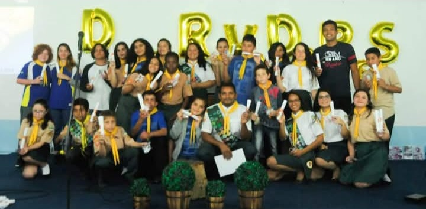

História
O Clube Atlântico tem sua data de fundação em 08/07/2018 com um irmão chamado Gilmar Pinheiro de Carvalho que tinha um ônibus muito simples mas que auxiliava pegando crianças totalmente carentes, ia na casa de apoio e também pegava crianças de lá e trazia para o Clube de Desbravadores, infelizmente o ônibus precisou ser vendido por questão dos custo para mantê-lo e logo veio a pandemia, após não foi possível dar continuidade ficando o Clube fechado alguns anos e retornando em 2024 com outra liderança, um jovem chamado Luis Miguel Tramontini de 18 anos assumiu e vem trabalhando desde então com uma liderança Unida, motivada e dedicada, para que tudo passa se reorganizar novamente, apesar de todas as dificuldades.
